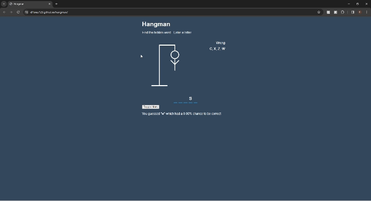
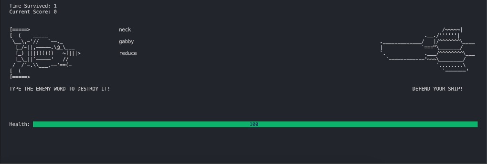
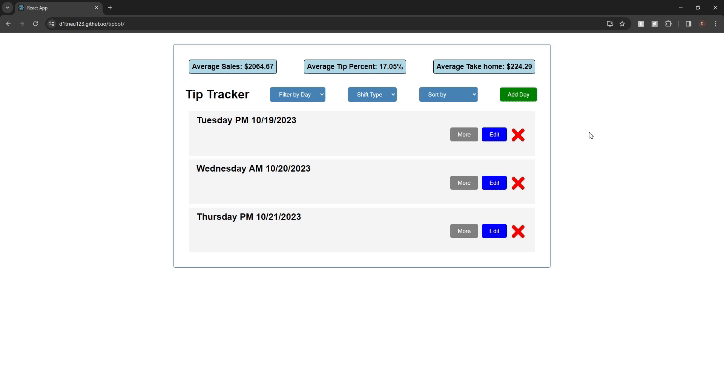

Projects
SurfStore View Repo
This was a project created in my networking an distributed systems course at UCSD where I created a DropBox like application that allows users to upload, download, and sync files across multiple clients and servers. In this project we created a metadata store and block store that could be handled across many servers that allowed or scalability and fault tolerance amongst these servers. Clients could interact with these servers and upload, download, and sync files across multiple clients. We also implemented a version control system to keep track of file changes and a consistent hashing algorithm to distribute blocks across block stores. Finally, we used the RAFT consensus algorithm to ensure that all servers were in agreement with the state of the metadata store.
UCal San Diego View Repo
This was a project I made for my principles of software engineering course at UCSD where I worked in a team of 4 to create a mobile application that helps students at UCSD track their food and calorie intake with the dining halls on campus. The project was great for me because it was my first time making a full-stack application from scratch, interacting with a database we created using MongoDB, while also giving me practice in mobile development with React Native. In this project we practiced Agile development and managed backlogs and deliverables as part of our quarter project.

Xquery Intepreter View Repo
This is a project I created with a partner that functions as an Xquery interpreter. Xquery is a language used to query XML documents and we were tasked with creating a program that would take in an Xquery file and an XML file and return the results of the query. Since the interpreter was built from scratch in Java, we utilized ANTLR to create a grammar for the Xquery language and then used the ANTLR library to parse the Xquery file and XML file. In this project we have 3 seperate milestones, creating an XPath interpreter, extending this interpreter to XQuery, and finally, creating a join operator to improve the speed of our queries. This project was meant to teach us how to implement database like operations while also giving me practice creating large java projects with a partner.
Hangman Probability Web Game View Repo View Demo
This was a project I made extending upon a homework assignment from my probabilstic reasoning and learning course. Our assignment was to create and implement and algorithm that would tell you the best guess given the state of a hangman game and its probability. I thought it'd be cool to design a simple front end for the program while also giving you the opportunity to play with the algorithm to see how your guesses measured up. I followed a react tutorial to create the hangman front end but had to incorporate the learning algorithm I created into the repo.

Terminal Asteroid Typing Game View Repo
This was my first school project where I worked with other classmates to create a terminal-based game using Haskell and the Brick library. The game functions like a lot of the common spaceship based typing games on the internet and we thought it would be cool to recreate it using the Brick library. This was a great experience for me because it was my first opportunity to collaborate on a project with other people, learn how to implement and navigate libraries I wasn't previously familiar with (Brick), and most importantly, it was my first time using Git for version control with other people. Through this, I practiced my skills in discussing code with my peers, fixing bugs in both my and my project mates code, and resolve merge conflicts with Git. While the game we made seemed simple, I learned so much with this project and I'm excited for the other projects I'll create in the future!

Service Industry TipBot View Repo View Demo
During my undergrad career, I worked at a local restaurant in La Jolla called Din Tai Fung. It was something I really enjoyed and when I started my computer science journey, I thought making a tip calculator would be a fun project to work on. I wanted to make something that would be useful for my coworkers and I, so I decided to make a tip calculator where servers could log their daily tips and sales, and see how much they made that day. Addiionally, you can filter your shifts by day or shift type to see how your averages change per shift. I used Javascript, React, and CSS to build the frontend and am currently still in the process of adding a backend to store user data.

Other Work
UCSD Kadonaga Website - A website I created for my lab during COVID.
ResiLens - A website created that outlines a VR solution for medical students made during my human centered computing and health course.